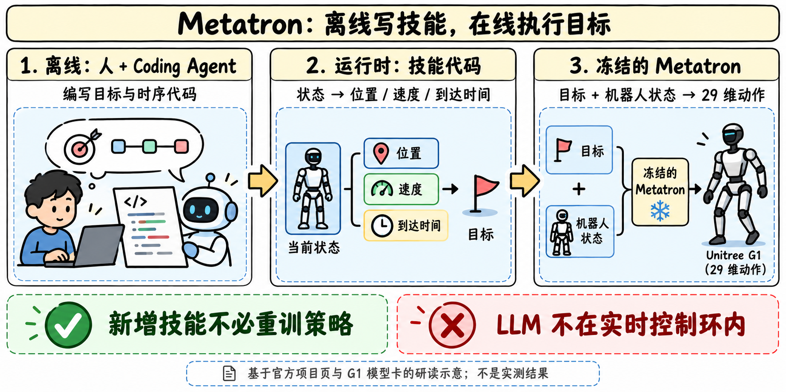
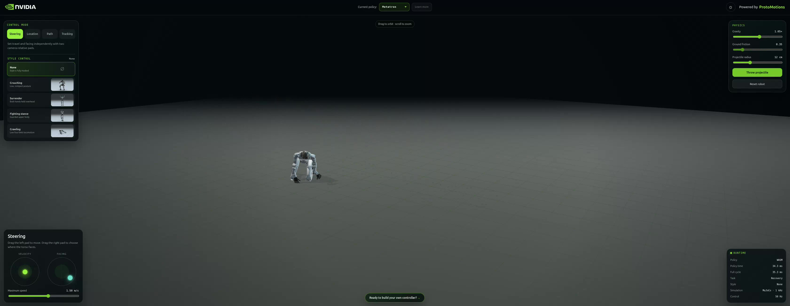

Metatron v1：把技能写成目标程序，让策略协调全身

问题：为什么只给稀疏目标，也能协调全身
低层控制器既要满足脚、手、躯干的局部约束，也要维持平衡与时序。若每个新任务都重新训练策略，迭代成本很高。Metatron 让任务代码只约束重要的目标，未约束的身体部分由生成式控制策略补全。目标包括全局/局部未来姿态、速度、样式和场景几何；“promptable”在这里主要是结构化运动目标，而不是聊天指令直接进电机。
项目页的逻辑分为三步：先用 RL 训练密集动作跟踪专家；冻结专家，通过带目标遮蔽的 on-policy distillation 得到能接受部分目标的策略；之后冻结策略，离线开发目标程序。G1 卡进一步列出运动跟踪、恢复与 SAMP 场景交互专家，学生以专家动作作为监督。不要把“专家用 RL”与“学生是每个任务在线 RL”混为一谈。
G1 原生模型的已知结构
| 字段 | 官方卡所述 |
|---|---|
| 机器人 / 动作 | Unitree G1，29 个 raw actions |
| 模型族 | MaskedMimic 风格 spherical conditional VAE |
| 潜变量 | 64 维球面 latent |
| prior | 6 层、4 heads、1024 宽 Transformer |
| 数据来源 | BONES、AMASS/LAFAN、fall recovery、SAMP interaction |
| 训练环境 | IsaacLab；不是所有物理引擎都已完整验收 |
| 运行时 | learned prior + conditioned decoder，不需外部专家 |
原生 checkpoint 包含 posterior 与归一化统计，但不含 optimizer state，不能当作可断点续训的完整训练 checkpoint。原生包约 459 MB；两个浏览器图各约 403 MB，这些是文件大小，不能直接换算成参数量或显存。
三种运行接口，不能互换
| 发布物 | 保留 / 输入输出 | 必须配套什么 |
|---|---|---|
| G1 原生 PyTorch | 权重、配置、posterior、normalization | ProtoMotions 对应版本及原生 observation / PD 映射 |
demo/model.onnx | 39 输入；集成 observation preprocessing 与动作转换；输出 action、raw_action、PD gains | 单机器人浏览器应用 |
racer/network.onnx | 六机器人批量 network；只输出 action、raw_action | Racer 外部 observation 与控制参数 |
主卡明确 Racer 的变化是图组织和 batching，不是新训练权重。单机器人输入含当前状态、八个历史状态样本、动作历史、masked future goals 与场景上下文。关节顺序、坐标系、四元数约定、历史排列、控制频率与归一化都是模型契约。
场景能力的细节尤其容易被误读
G1 权重保留场景条件；PyTorch prior 可接受两个 scene boxes，每盒八个三维角点，以及可见性 mask。场景坐标在 root-heading frame。单机器人 39 输入的预导出图也保留了相应预处理。
但随包原生 preset 和通用 re-export 关闭场景输入：角点为零，visibility mask 为 false。通用导出会得到另一条 observation path，不能据“权重相同”认定它与 scene-capable demo 图相同。原生 preset 会拒绝家具场景文件，避免静默忽略；本包也没有给出完整 SAMP 训练 recipe 或 scene provider。
编码 Agent 到底参与了哪一段

项目页说 Claude Code 用动作捕捉片段拟合脚轨迹规则，改善实机步态，评价是定性的；GPT-6 Astra 在人指导下为仿真任务迭代目标代码、时序与动作参考。运行时 C++ 技能代码读取当前状态并输出目标，LLM 不在实时控制环里。
| 官方项目页案例 | 展示结果 | 解读限制 |
|---|---|---|
| 四次跨栏 | 单次连续运行跨过 4 个 20 cm 栏，间距 5 m，无碰栏 | 栏位置由任务代码提供，不能称视觉避障成功率 |
| 跌倒恢复 | 该次运行跌倒后 3.28 s 再次奔跑 | 不是恢复时间分布或实机平均值 |
| 保龄球 | 该次击倒 9/10 球瓶 | 释放时刻由场景代码指定，不是自主抓取规划评测 |
| 网球 | 该次出球 5.37 m/s | 定时落球练习，不是视觉追踪来球 |
| 踢球 | 该次峰值球速 4.82 m/s | 接触物理使球运动；不代表开放环境泛化 |
项目还展示 SOMA / IsaacLab 的另一策略。不能把 SOMA 片段归成这个 G1 包已验证的同一个 checkpoint。
评测证据：数值一致性与任务效果分开
六机器人图与单机器人导出在 60 个状态/历史扰动测试上的最大 action 绝对差为 5.55e-6。这证明特定测试集上的导出数值接近；不证明任务成功率、安全性或 sim-to-real 泛化。原生卡的配置加载、有限动作、rollout/reset、归一化一致性、scene sensitivity 也属于集成检查。
本轮未下载权重、未安装运行机器人代码。仍缺训练/验证划分、重复试验、控制延迟分位数、恢复成功率与部署干预率。
对 Agent Training 的启发
建议在固定策略版本、同一物理参数与随机初态下比较人工代码、Agent 代码与无脚目标版本。记录成功率、跌倒/恢复、目标满足误差、任务代码复杂度和人为干预；仿真、实机分别报告。这是研读提出的实验设计，没有宣称已复现。
官方来源与导航
- [S1] HF Model Card
- [S2] G1 Model Card
- [S3] 官方项目页
- [S4] ProtoMotions 官方代码
- 基模主题索引
- 中文Poster
📊 相关可视化: Metatron v1 中文Poster